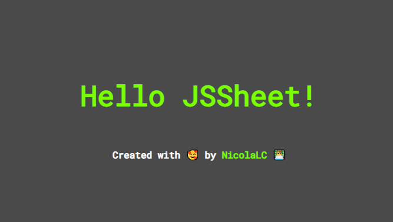

What is JSSheet
JSSheet is a new way to create stylesheets for your websites, it uses JavaScript to create
minified
CSS files.
The goal is to handle styles and logic with a single language, and to create some cool
shortcuts to
handle complex flexbox and css grids layouts
How does it works
The logic behind is pretty simple, we define a main .js file called styles.js, wich exports
a stylesheets object:
/**
* HELLO WORLD EXAMPLE
*
* @author nicolacastellanidev@gmail.com
* @desc the root stylesheet, don't rename stylesheets export
*/
const { generics } = require('./partials/generics');
/**
* Core stylesheet
*/
const stylesheets = {
root: {
selector: "body",
padding: 0,
margin: 0,
width: '100vw',
height: '100vh',
align: 'center column',
children: [
...generics
]
}
};
module.exports = {
stylesheets,
};
As you can see the main stylesheets component defines a :root selector, wich is the starting
point for JSSheet.
Hello JSSheet!

This is a simple introductive tutorial to start with JSSheet, you will see how to install the
dependencies
and start the parser.
Step 1. clone the repository and install dependencies
Clone the repository:
git clone https://github.com/NicolaLC/js-sheet.git
cd js-sheet/tutorials/hello-world
yarn
yarn dev